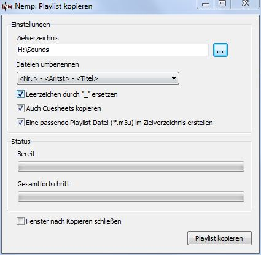

|
Playlist kopieren
|
Nemp bietet Ihnen die Möglichkeit, die Dateien in der
Playlist in einem Ordner zu sammeln. Sie können damit aus Ihrer
Medienbibliothek eine Liedliste zusammenstellen, und diese dann auf
einen mobilen mp3-Player kopieren.
Copy&Paste
Über die Tastenkombination Strg+C können Sie die markierten
Dateien in die Zwischenablage kopieren. Wenn Sie dann im
Windows-Explorer Strg+V drücken ("Einfügen") werden die
Dateien in das entsprechende Verzeichnis kopiert. Dabei werden
eventuell vorhandene Cuesheets (*.cue) mit kopiert,
Webradio-Einträge werden hingegen ignoriert.
Wenn Sie Strg+Shift+C drücken, wird zusätzlich eine passende
Playlist-Datei (*.m3u bzw. *.m3u8) erstellt und mit in die
Zwischenablage eingefügt. Damit können Sie die aktuelle
Playlist (bzw. den markierten Teil) aus dem neuen Ordner heraus
wiederherstellen. Beim Kopieren geht ansonsten die Information
über die Reihenfolge der Lieder in der Playlist verloren.
Playlist in ein Verzeichnis kopieren
Zusätzlich bietet Nemp eine Kopierfunktion, bei der auch die
Dateinamen angepasst werden können, so dass eine alphabetische
Sortierung der Dateien mit der Sortierung in der Playlist
übereinstimmt. Wählen Sie dazu im Playlist-Menü den
Punkt "Playlist in ein Verzeichnis kopieren".
In dem Fenster, das sich dann öffnet, können Sie den Zielpfad
auswählen, aus einigen Vorgaben für die Benennung der
kopierten Dateien wählen. Auf Wunsch werden auch wieder die
Cuesheets kopiert (und automatisch an den neuen Dateinamen angepasst),
oder eine zusätzliche Playlist-Datei erstellt.
